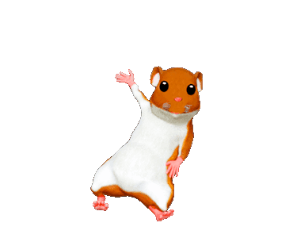

-kiedy powstała - W 1995 roku
-dlaczego jest to język skryptowy - Nie musi zostać skompilowany do kodu maszynowego, aby można było zobaczyć efekty jego działania.
-gdzie jest wykonywany JS (kliet lub serwer) - Wystarczy nam do tego przeglądarka internetowa, która ten język obsługuje
-dlaczego jest to bezpieczne narzędzie - JavaScript ma znacznie ograniczone uprawnienia dostępu do zasobów komputera, przy użyciu którego przeglądana jest dana strona, a wszelkie odwołania do funkcji i obiektów wykonywane są w trakcie wykonywania programu.
-czy jest to język obiektowy , jeśli tak to dlaczego. - JavaScriptu należy dobrze poznać tak zwany obiektowy model dokumentu HTML – czyli DOM.
